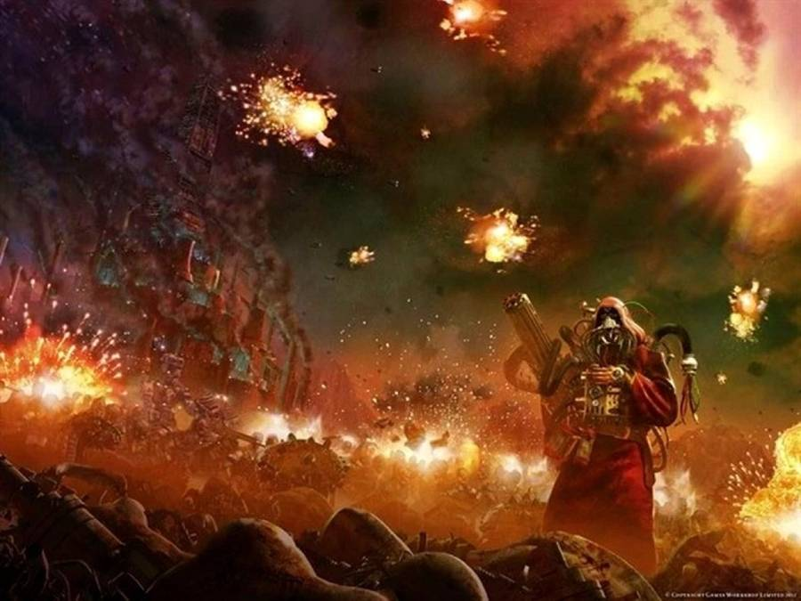
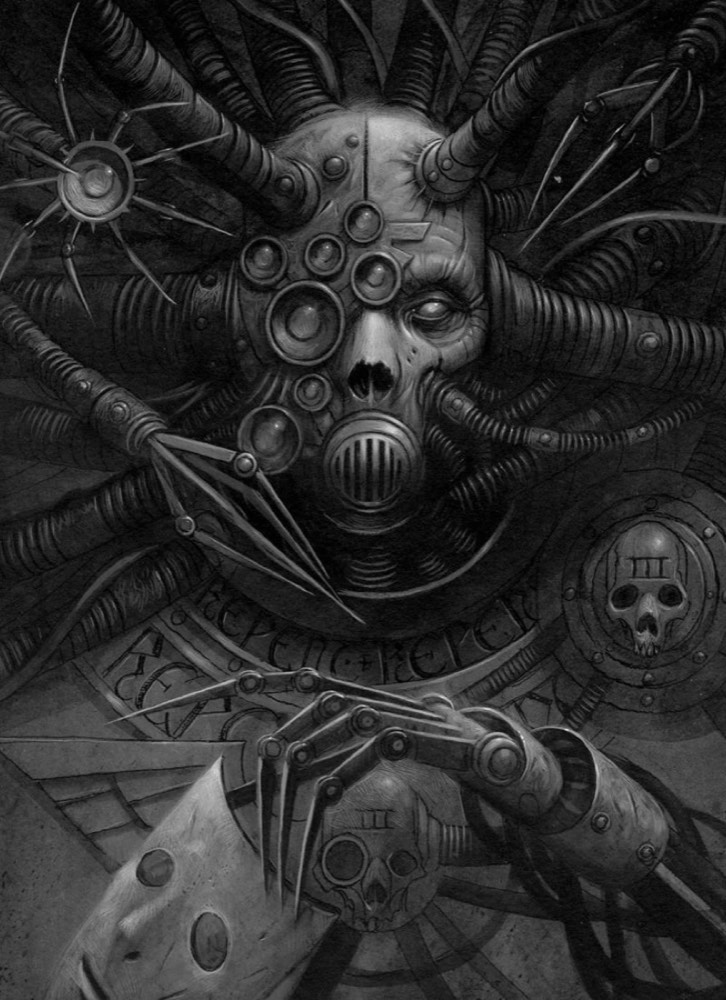
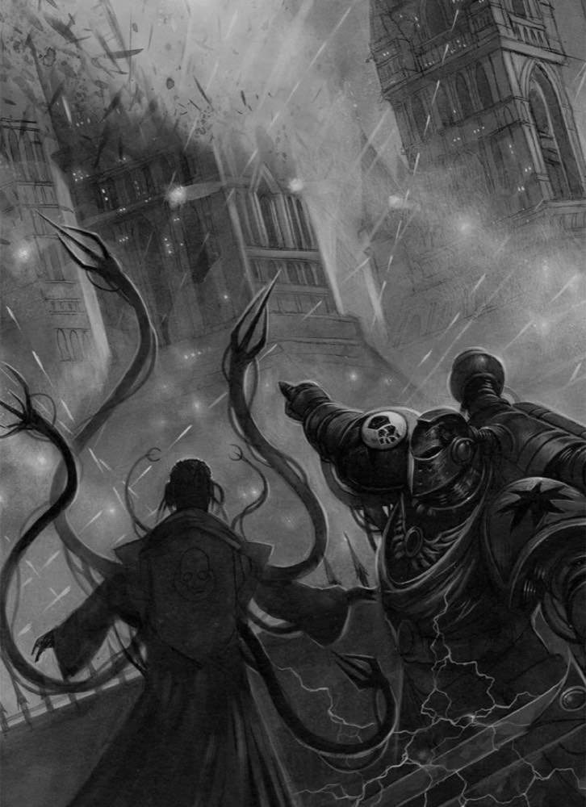

Schism of Mars
| Schism of Mars | |
|---|---|
| Part of the Horus Heresy | |
 A Mechanicum adept before a forge city in flames, from a Martian pict-record Artwork © Games Workshop | |
| Date | 005–006.M31 (open war); blockade and occupation to 014.M31 |
| Location | Mars, Sol System |
| Result | Dark Mechanicum control of Mars; loyalist remnant withdrawn to Terra; the Mechanicum divided; Mars liberated after the Siege of Terra |
| Belligerents | |
| Loyalists | Dark Mechanicum |
| Commanders and leaders | |
| Strength | |
| Casualties and losses | |
| Loyalists: | Dark Mechanicum: |
| Billions of Martian dead by the Mechanicum tally[1]; 14,000,000 killed by virus bombs in minutes at Ismenius Lacus; irreplaceable forges and archives lost | |
The Schism of Mars was the civil war that broke out among the priests of the Mechanicum on Mars in 005.M31, in the first days of the Horus Heresy. It set the faction led by the Fabricator-General Kelbor-Hal, which had thrown in its lot with the Warmaster Horus, against those forges and Titan Legions that remained loyal to the Emperor of Mankind. The war was fought across the whole surface of the Red Planet by Skitarii, Titans, Knights and the machines of the forges, and it left Mars in Traitor hands for the rest of the Heresy. It split the Mechanicum permanently into the corrupted Dark Mechanicum and the loyalist Adeptus Mechanicus that the Imperium recognises today.[2][1]
The Schism mirrored the larger war. Legion fought Legion across the galaxy, and Titan fought Titan on Mars. It decided who would supply the Traitors' armies, and it deprived the Loyalists of the greater part of the Imperium's means of making war. The loss of the forges of Mars, some of which had supplied the greater part of the armour and weapons of the Legions, was felt for ten millennia.[1]
Background
[edit]Mars in the Great Crusade
[edit]The Mechanicum had agreed to supply the Great Crusade under the Treaty of Olympus. In return it received political autonomy, exemption from the Imperial Truth, astropath choirs and Navigator houses of its own. The Emperor required the Mechanicum to abandon the construction of thinking machines and to seal the more dangerous artefacts of the Dark Age in the Vaults of Moravec. The price was not small. The Mechanicum had to turn Mars into the arsenal of the crusade, and some of its magi, in particular those who valued the pursuit of knowledge over the Emperor's plans, came to regard the Treaty as a servitude.[2]
Discontent
[edit]The Martian climate before the Heresy was one of suppressed conflict. The forge cities, the political units of Mars, were governed by magi who had their own ambitions, and there were outbreaks of espionage and violence among them. It was suspected that several Titan Legions of the Collegia Titanica, the Mechanicum's strongest military force, had already chosen sides in case of a rupture. A large faction under the Fabricator-General Kelbor-Hal had come to the view that the Emperor was a false Omnissiah. The true god of the Machine had not yet revealed himself, and the Emperor's turning of Mars into a weapons factory, and his ban on certain lines of research, were a theft from the order.[2]
Horus's approach
[edit]The Warmaster understood that a rebellion would need the Mechanicum. The Sons of Horus had come into possession of a wealth of ancient Standard Template Construct records on the worlds of the Auretian Technocracy, which the Legion had subjugated, and Horus used them as an inducement. He sent to Mars a Mechanicum envoy named Regulus, who had already joined him, to secure Kelbor-Hal. Regulus convinced the Fabricator-General that Horus would support the Mechanicum's autonomy and its freedom of research against the Emperor's autocracy. As a sign of good faith, Horus gave the Fabricator-General the access codes to the Vaults of Moravec.[1]
Course of the war
[edit]The opening of the Vaults
[edit]Kelbor-Hal opened the Vaults, which the Emperor had sealed under the Treaty of Olympus in 739.M30, more than two centuries earlier. Within lay innumerable artefacts of technology that had been made or corrupted by the power of Chaos. The infection that spread from them took the form of a code. Scrapcode, a contaminated digital source that acted as a virus, entered the logic stacks and cogitator archives of the forges and caused disorder wherever a system was linked to an infected one. Communication on the planet and with the outer worlds was disrupted, essential industries were sabotaged, and a confusion followed that Kelbor-Hal's faction used to marshal its forces.[1]

The Noosphere
[edit]Some regions of Mars were spared by the scrapcode because they had adopted a new and more secure data network, the Noosphere, devised by Koriel Zeth, mistress of the forge of Magma City. Those regions were the forges of Koriel Zeth, of Ipluvien Maximal, and that of the Fabricator-Locum Zagreus Kane, the Mondus Occulum, and they became the centres of the loyalist resistance.[1]
The first shot of the war was fired when the Kaban Machine of the Traitor adept Lukas Chrom, a machine said to have been built around forbidden artificial intelligence, destroyed a plasma reactor complex belonging to Maximal. Open war was a little slower in coming. Kelbor-Hal wanted a pretext and tried to provoke those who would not join him by sabotage, assassination and aggression, as when the Legio Mortis, which had joined the Traitors, entered the territory of the loyalist Legio Tempestus and refused to reply to hails in the hope that the Tempestus would fire first.[1]
The pretext was supplied by Koriel Zeth. She declared that she no longer believed in the Machine God, though she remained loyal to the Emperor and to his goals, since technology came from reason and science and not from faith. The Dark Mechanicum branded her and her followers hereteks, a crime in the Cult Mechanicus, and attacked Magma City.[2]
The fighting
[edit]The war spread over the planet within hours. The records of the Schism recount a series of battles of which the following are the best known.
- Madler Crater. The first blow was struck at the forge of Magos Mattias Kefra, in the Sinus Sabaeus. Titans of the Legio Magna marched from the south and smashed in the gates within minutes. They ran through the walls, crushing everything that lived, burning great libraries and the shops that supplied the Solar Guard.
- Cassini Crater. The god-engine fabrication yards of the High Magos Ahotep were struck by a hundred thermonuclear missiles from silos hidden in the mesas of Nilo Syrtis. The fire filled a crater four hundred kilometres across, and the cloud rose seventy kilometres into the sky.
- Lunae Palus and Arcadia. Princeps Ulriche of the Death Stalkers fell on the fortress of Maxen Vledig's Legio Honorum, which lost nineteen Titans in the first hour, then fled into the frozen wastes of the north and got no answer to its calls for help.
- Athabasca Valles. The Legio Ignatum and the Burning Stars fought a long, close-range battle among the flood-carved landforms of the valleys and parted after a night with neither the better of it.
- Mondus Occulum. The outlying cogitators of Kane's forge were clogged with scrapcode. Kane saved most of his systems by shutting down the input and output highways, helped by the fact that most of them had already been upgraded to Koriel Zeth's noospheric design.
- Mare Tyrrhenum. At the Herschel impact basin 900,000 Skitarii and protector troops fought hand to hand until nearly all were dead.
- Ipluvien Maximal's forge was besieged by Ordinatus engines of a kind never seen before.
- Ismenius Lacus. Dark Mechanicum forces used virus bombs on the forge city and killed fourteen million people in minutes, the greatest loss of life in a single engagement of the war.
In orbit, Traitor ships forced the vessels of the Battlefleet Solar to withdraw and traded fire with the loyalist craft. During one of these exchanges an Ark Mechanicus was destroyed and fell onto the planet, upon the Basilica of the Blessed Algorithm. The impact laid waste an area measured in millions of square kilometres, and the Mechanicum's own tally of the dead places them in the billions.[1]
Magma City
[edit]The loyalists made their stand at Magma City. The Legio Tempestus and the Knights of House Taranis came to the aid of Koriel Zeth, and the forges of Zeth, Maximal and Kane were soon surrounded and under siege. The Dark Mechanicum's assault was led by the Legio Mortis and its Imperator Titan Aquila Ignis. It was blunted when a flow of lava overran the Traitor ranks, and the Tempestus destroyed most of the Mortis, among them the Aquila Ignis. It was a victory, but the situation of the loyalists across the planet remained desperate. They were outnumbered and outgunned, and the rest of the war was a retreat.[1]
Intervention of Terra
[edit]Dorn's expedition
[edit]Salvation, such as it was, came from Terra. Malcador the Sigillite, Regent of Terra, charged Rogal Dorn, the Praetorian of Terra, with securing the forges of Mars for the Imperial war effort. Dorn sent his Legion's First Captain Sigismund, four companies of the Imperial Fists and a large force of Imperial Army troops. The aim was to take the munitions manufactoria of Mondus Gamma and Mondus Occulum, in the loyalist arc of the northern hemisphere, which between them produced the greater part of the armour and weapons of the Legions, and then to push outward and secure the rest.[1]

Mondus Gamma and Mondus Occulum
[edit]Nothing went as planned. Captain Camba-Diaz and two companies of Fists, with four regiments of Jovian Grenadiers, about fifteen thousand soldiers in all, made planetfall in the Mondus Gamma complex and were soon fighting for their lives. Thirteen companies of Saturnine Hoplites who were to break the siege of Maximal's forge were turned back repeatedly by the altered weapon-creatures of the Dark Mechanicum. Camba-Diaz secured the power armour forges and the ammunition silos, but his force was outnumbered by a hundred to one, and the troops of Lukas Chrom drove him back to the landing fields.[1]
Sigismund, landing at Mondus Occulum below the caldera of Pavonis Mons, was relieved to find that Kane held out for the Emperor. The Fabricator-Locum's servitors worked at full capacity, and Sigismund took away a great store of munitions, including nearly twelve thousand suits of Mark IV Maximus power armour and twice as many Astartes weapons. The Loyalists had run out of time. His void masters reported a large enemy force closing on the forge, with infantry, armour, Skitarii and two Titan Legions of nearly sixty god-engines. Kane warned him that if both forges fell, the Imperium would have no means of replacing the losses that its armies would suffer.[1]
The withdrawal
[edit]Sigismund wanted to stay and avenge the dead. His orders allowed no futile gesture, and he held to the purpose his primarch had given him, to secure the armour and weapons that would be needed to defend the Imperial Palace. Within a few hours both Mondus Occulum and Mondus Gamma were burning, and a large part of their machinery was gone. The landing ships rose from the surface like comets, and Army and Astartes vessels jostled in the sky in their haste. Barely a thousand loyalists escaped. They carried tens of thousands of suits of newly built Mark IV, V and VI power armour and the other materiel that would give the Imperium its edge in the war to come.[1]
Aftermath
[edit]The blockade
[edit]The Imperial forces from Terra blockaded Mars. The Traitors made several attempts to break out, and the commander of the Imperial Fists force responsible for the cordon, Efried, held them. Mars remained in the hands of the Dark Mechanicum until after the Siege of Terra in 014.M31 and the Great Scouring, when the Traitors were driven to take refuge in the Eye of Terror. The planet's Traitor forges supplied the war of Horus with Titans, Knights and weapons, and the Dark Mechanicum took part in the Drop Site Massacre on Isstvan V.[1]
The Dark Mechanicum
[edit]The Dark Mechanicum used the forbidden knowledge of the Vaults and the secrets of the STC records that Horus had given them. They fused daemons with the machine spirits of their engines, built war machines that combined the Warp with metal, and abandoned the sacred doctrines of the Cult Mechanicus. Having forsaken the Omnissiah, the Mechanicum of Kelbor-Hal found that their lives were bound to powers more capricious. The Traitor adepts are known to Imperial records as hereteks, and the machines that they made are counted among the worst horrors of the Heresy.[2]
The Adeptus Mechanicus
[edit]In 012.M31 the loyalists under Zagreus Kane were formally recognised by the Council of Terra as the Adeptus Mechanicus, separate from the corrupted Mechanicum of Mars. Kane became the first Fabricator-General of the new order and its first representative among the High Lords. Thousands of Kelbor-Hal's captive followers were executed, and the loyal Titan Legions formed the Collegia Titanica. The recognition ended a long political deadlock on Terra, and the new order's seat among the High Lords of Terra has been a permanent feature of the Imperium since.[2]
Legacy
[edit]The Schism is the founding event of the modern Mechanicum. Its effects ran through the 42nd millennium in the order's distrust of the Warp and of any machine that thinks, in its suspicion of its own forges, and in the doctrines of purification it applied to the Moirae Schism and other later crises. The Mechanicum's own annals treat the Schism as a wound that has never closed.[2]
The loss of the forges of Mondus Gamma and Mondus Occulum, the order's greatest production centres, was a blow that the Mechanicum has never entirely made good. Scholars of the Logos Historica Verita observe that the Imperium of the Great Crusade was in that sense disarmed by its own ally. The armour and weapons that Sigismund carried back to Terra were among the stores that armed its defenders in the Siege of Terra.[1]
Timeline
[edit]| Date | Event |
|---|---|
| 739.M30 | The Treaty of Olympus; the Emperor seals the Vaults of Moravec beneath Olympus Mons. |
| c. 939.M30 | Kelbor-Hal becomes Fabricator-General of Mars.[b] |
| c. 001–004.M31 | Discontent among the forges; Horus obtains STC records from the Auretian Technocracy.[c] |
| 004–005.M31 | Horus's envoy Regulus wins over Kelbor-Hal. |
| 005.M31 | Kelbor-Hal opens the Vaults and looses scrapcode; Lukas Chrom's Kaban Machine fires the first shot. |
| 005.M31 | Koriel Zeth renounces the Machine God and is declared heretek; war spreads across Mars within hours. |
| 005.M31 | Battles at Madler Crater, Cassini Crater, Lunae Palus, Athabasca Valles, Mare Tyrrhenum and Ismenius Lacus. |
| 005–006.M31 | The siege of Magma City by Legio Mortis; Koriel Zeth is killed. |
| 006.M31 | Rogal Dorn sends Sigismund to Mars; Zagreus Kane's forge at Mondus Occulum is stripped of arms. |
| 006–014.M31 | The Imperial Fists blockade Mars under Efried. |
| 012.M31 | The Council of Terra recognises Kane's loyalists as the Adeptus Mechanicus. |
| 013–014.M31 | The Solar War breaks the blockade; Kelbor-Hal joins the Siege of Terra. |
| c. 014–021.M31 | Mars is retaken by the Adeptus Mechanicus during the Great Scouring; the Dark Mechanicum flees to the Eye of Terror.[d] |
See also
[edit]Notes
[edit]References
[edit]- ^ a b c d e f g h i j k l m n o p Bligh, Alan. The Horus Heresy Book Six - Retribution (Forge World Series). Black Library, pg. 30. Horus Heresy: Collected Visions (Compilation), pg. 337.
- ^ a b c d e f g McNeill, Graham. Mechanicum (novel). Black Library. Sanders, Rob. Cybernetica (novel). Black Library.